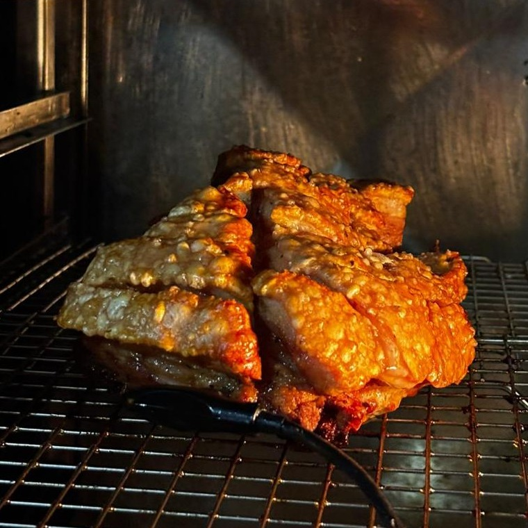
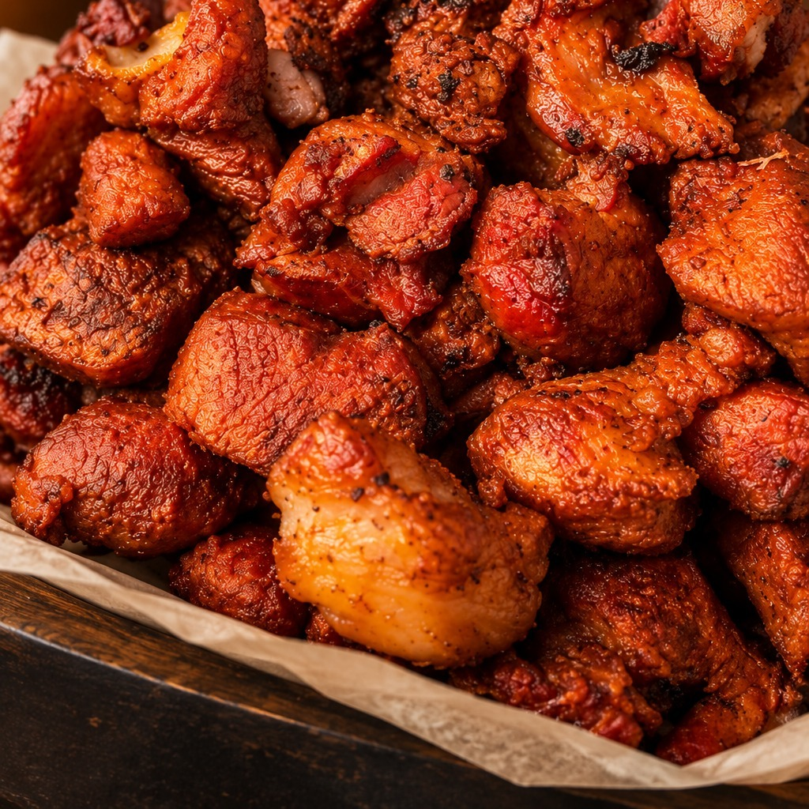
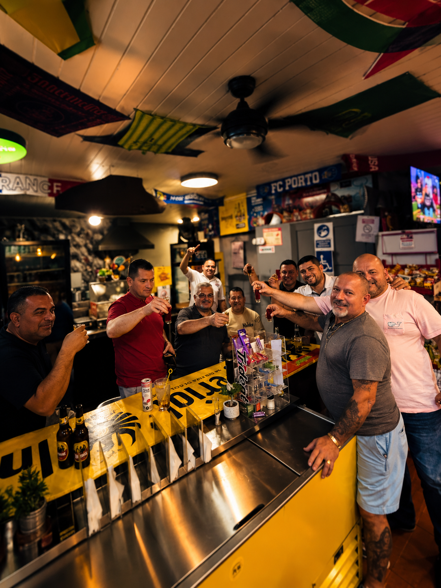
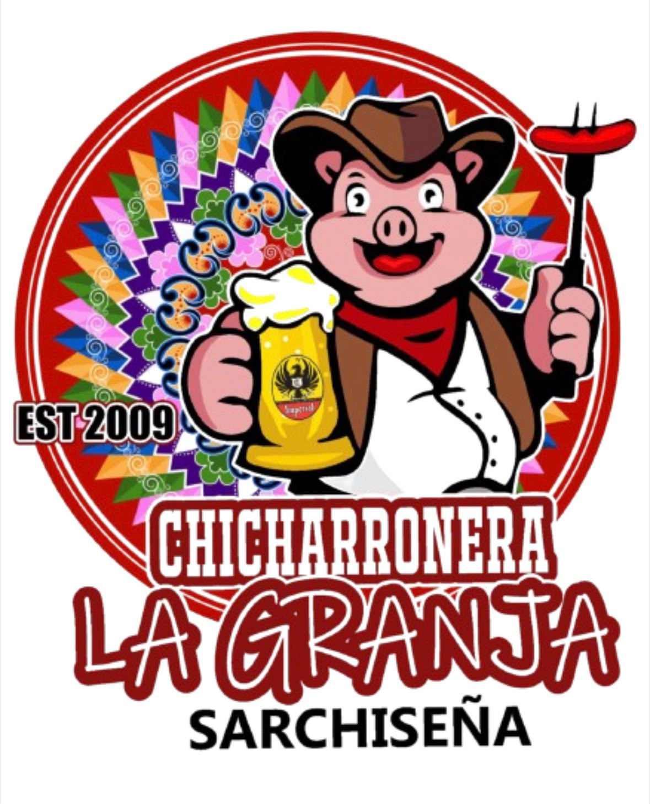
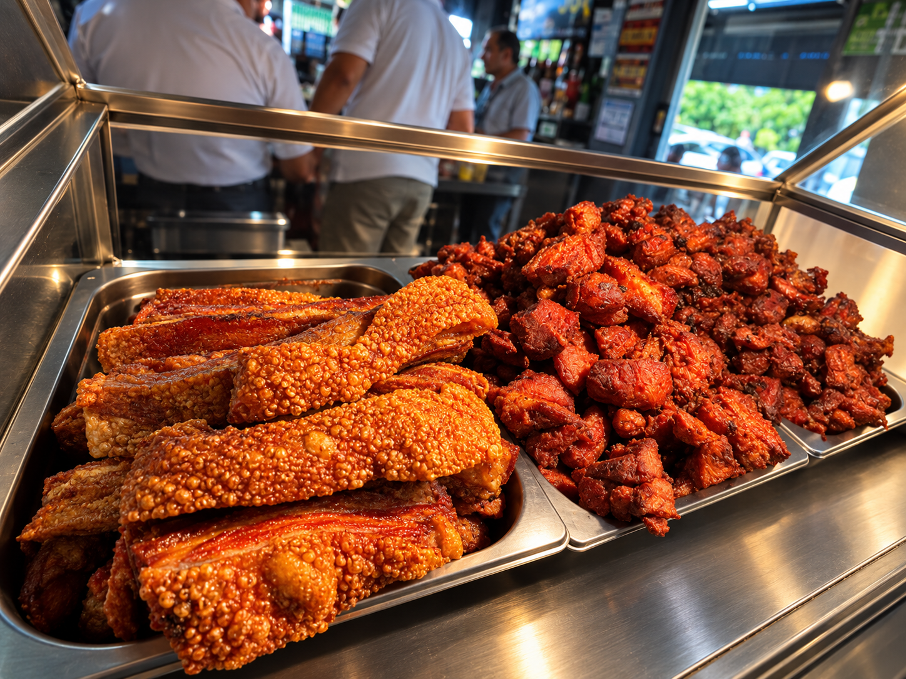

Sarchí Norte, Costa Rica
Chicharronera La Granja Sarchiseña
Conocida con cariño como "Happy Corner"
Chicharrón crocante hecho como siempre, bocas frescas para compartir, y ambiente familiar en el corazón de Sarchí.
Mié – Sáb
11am a 10pm
₡9,800 / kilo
Chicharrón Posta
₡12,000 / kilo
Pork Belly
₡9,800 / kilo
Costilla de Cerdo
Lo que no te podés perder
Platos de la casa
Preparados frescos, con la receta de siempre.
Especialidad

Pork Belly
Crocante por fuera, jugoso por dentro.
Favorito
Boca de Costilla
Perfecta para compartir con una fría.
Clásico

Chicharrón Posta
El de siempre, dorado y en su punto.
La Granja en fotos
Nuestro ambiente
El espacio donde disfrutás del mejor chicharrón en Sarchí.





Antes de venir
¿Hay chicharrones hoy?
Como se preparan frescos, la disponibilidad puede variar según el día. Para no hacer el viaje en vano, escribinos antes por WhatsApp y te confirmamos al momento.
Encontranos en Sarchí Norte
Local 1, Centro Comercial Plaza del Norte, Sarchí Norte.
Ver ubicación y contacto